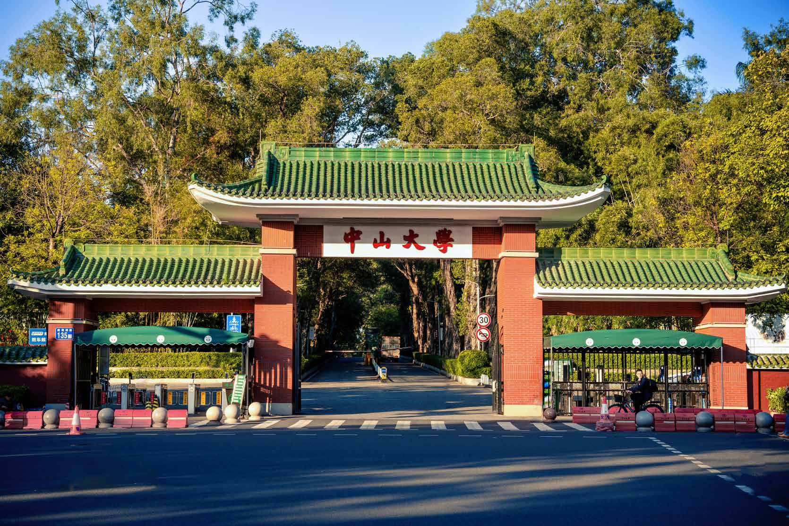

Sun Yat-sen University
Office of International Students’ Affairs 外国留学生办公室
2026
国际学生报到注册
International Student Registration
欢迎来到中山大学 Welcome to Sun Yat-sen University
博学 审问 慎思 明辨 笃行
Registration Time 报到时间
Undergraduate Students
本科生
August 27, 2026
08:30 – 17:30
Graduate Students
研究生
September 3, 2026
08:30 – 17:30
Registration Places 报到地点
First Stop 第一站
入学资格及签证审查
Admission Qualification & Visa Verification
中山大学广州校区南校园东南区 258 栋外国语学院一楼校友之家
Alumni Home, 1st Floor, Building 258, School of Foreign Languages, South Campus
Second Stop 第二站
所属院系报到注册
Registration at Your School/Department
请根据所属院系安排前往指定地点办理报到。
Please follow the instructions of your school/department.
On-site Process 现场流程
- 1Document Collection材料领取
- 2Visa Verification国际学生签证审查
- 3Admission Eligibility Verification国际学生入学资格审查
- 4Admission Eligibility Review国际学生入学资格复查
- 5Result Confirmation国际学生审查结果确认
- 6Collect Original Admission Notice & Visa Status Verification Form领取录取通知书原件和《国际学生签证状态审核单》
- 7Register at Your School/Department前往院系